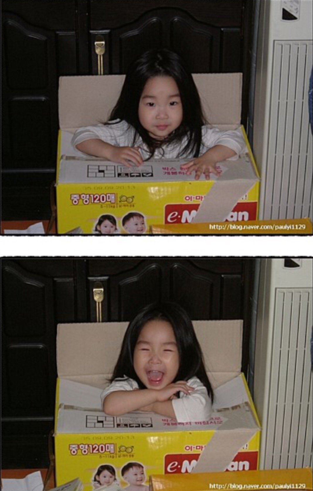

에펠탑 건축 당시에는 우아한 파리의 거리와 어울리지 않는 '철골 덩어리'라며 지식인들의 비난을
받았다. 그러나 완공된 후에는 새로운 예술
을 추구하는 사람들에게 많은 지지를 받았고, 오늘날에는 파리의 랜드마크로 자리 잡았다.
에펠탑 건축 당시에는 우아한 파리의 거리와 어울리지 않는 '철골 덩어리'라며 지식인들의 비난을 받았다.그러나 완공
된 후에는 새로운 예술을 추구하는 사람들에게 많은 지지를 받았고, 오늘날에는 파리의 랜드마크로 자리 잡았다.
에펠탑 건축 당시에는 우아한 파리의 거리와 어울리지 않는 '철골 덩어리'라며 지식인들의 비난을 받았다.
그러나 완공된
후에는 새로운 예술을 추구하는 사람들에게 많은 지지를 받았고, 오늘날에는 파리의 랜드마크로 자리 잡았다.